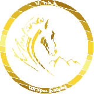
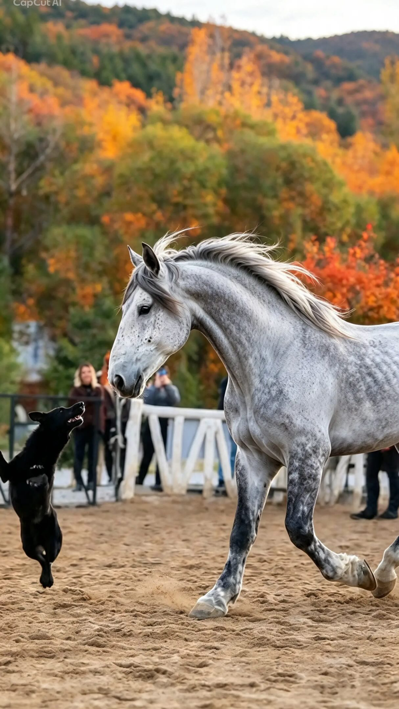
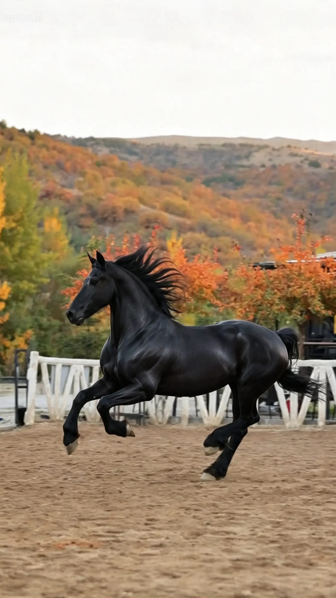
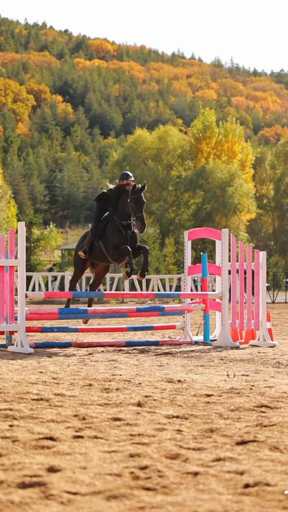
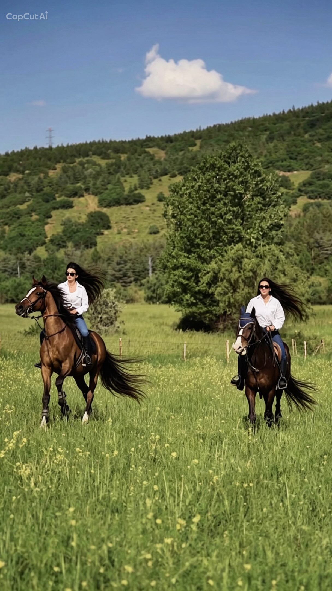

Birlikte öğrenmek.
Atla tanışın. Temel binicilik eğitimiyle başlayın. Kırk dakikalık derslerle kendinize düzenli bir pratik alanı açın.
Başlangıç seçenekleri ↗
ANKARA · ÖZEL BİNİCİLİK KULÜBÜ
Şehrin temposuna bir ara.
Binicilikle başlayan, doğayla derinleşen bir bağ.

Yakınlaşın.
Tanıyın.
Birlikte ilerleyin.

Binicilik eğitimi, orman parkurları ve at pansiyonu. Atlarla kurulan ilişkiye zaman ayıran yetişkinler için bir kulüp.
Kulübü keşfedin ↗
Öğrendiklerinize yeni bir alan açın.
Orman biniciliğiyle farklı bir ritim keşfedin.

Kulüp üyeliği, binicilik paketi alımıyla başlar.
İlk deneyiminiz için deneme dersini sorun.
Dersler haftalık randevuyla yapılır. Güncel ücret ve uygunluk bilgisi için kulüple görüşün.
SİZE AYIRDIĞIMIZ BİR ZAMAN
Salı — Pazar · 11.00 — 21.00
Pazartesi kapalı